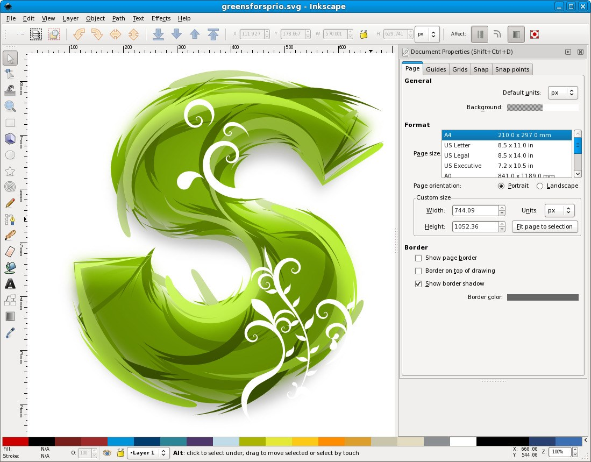

Inkscape es un editor de gráficos vectoriales gratuito y de código libre. Inkscape puede crear y editar diagramas, líneas, gráficos, logotipos, e ilustraciones complejas. El formato principal que utiliza el programa es Scalable Vector Graphics (SVG) versión 1.1. Inkscape tiene como objetivo proporcionar a los usuarios una herramienta libre de código abierto de elaboración de gráficos en formato vectorial escalable (SVG) que cumpla completamente con los estándares XML, SVG y CSS2. Inkscape se encuentra desarrollado principalmente para el sistema operativo GNU/Linux, pero es una herramienta multiplataforma y funciona en Windows, Mac OS X, y otros sistemas derivados de Unix. Es una aplicación disponible en muchas lenguas, incluyendo sistemas de escritura complejos (como sistemas de escritura de derecha a izquierda como árabe, hebreo...).
